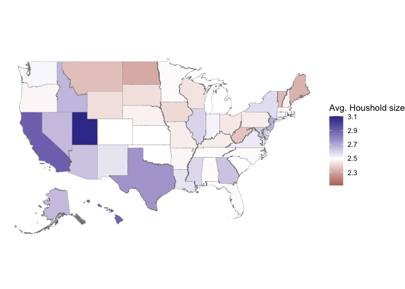
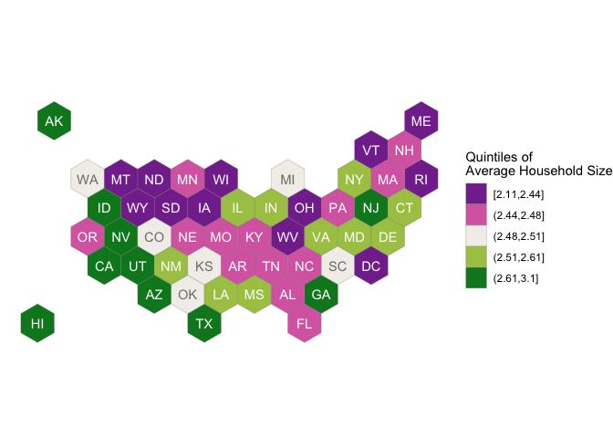

The goal of the package handbook is to provide data for some infrastructure to create graphics.
Installation
You can install the development version of handbook like so:
remotes::install_github("heike/handbook")Example
This is a basic example which shows you how to solve a common problem:
# Setting up all packages for the examples
library(handbook)
library(tidyverse)
#> ── Attaching packages ─────────────────────────────────────── tidyverse 1.3.1 ──
#> ✔ ggplot2 3.3.6 ✔ purrr 0.3.4
#> ✔ tibble 3.1.7 ✔ dplyr 1.0.9
#> ✔ tidyr 1.2.0 ✔ stringr 1.4.0
#> ✔ readr 2.1.2 ✔ forcats 0.5.1
#> ── Conflicts ────────────────────────────────────────── tidyverse_conflicts() ──
#> ✖ dplyr::filter() masks stats::filter()
#> ✖ dplyr::lag() masks stats::lag()
library(patchwork)
library(glue)
## basic example codeColor schemes
Six sequential color schemes (palette = 1:6, type = "seq") and three divergent color schemes (palette = 1:3, type = "div") were implemented based on IES colors:
scale_fill_nces
#> function (..., type = "seq", palette = 1, direction = -1, aesthetics = "fill")
#> {
#> ggplot2::discrete_scale(aesthetics, "nces", nces_palette(type,
#> palette, direction), ...)
#> }
#> <bytecode: 0x7fd1a9700588>
#> <environment: namespace:handbook>
scale_colour_nces
#> function (..., type = "seq", palette = 1, direction = 1, aesthetics = "colour")
#> {
#> ggplot2::discrete_scale(aesthetics, "nces", nces_palette(type,
#> palette, direction), ...)
#> }
#> <bytecode: 0x7fd1a9769b30>
#> <environment: namespace:handbook>Maps
The statesmaps object consists of polygons and hex shapes describing each state. Additionally, state names, abbreviations and fips codes are provided for linkage with data sources.
head(statesmaps)
#> # A tibble: 6 × 10
#> state_name state_abbv state_fips piece hole group polygon hexagon
#> <chr> <chr> <chr> <dbl> <lgl> <fct> <list> <list>
#> 1 Alabama AL 01 1 FALSE Alabama.1 <tibble> <tibble>
#> 2 Alabama AL 01 2 FALSE Alabama.2 <tibble> <tibble>
#> 3 Alabama AL 01 3 FALSE Alabama.3 <tibble> <tibble>
#> 4 Alabama AL 01 4 FALSE Alabama.4 <tibble> <tibble>
#> 5 Alaska AK 02 1 FALSE Alaska.1 <tibble> <tibble>
#> 6 Alaska AK 02 2 FALSE Alaska.2 <tibble> <tibble>
#> # … with 2 more variables: hexagon_labels <list>, polygon_labels <list>As an example to acquire data from the US Census Bureau we can use the code below, thanks to Kyle Walker’s amazing tidycensus package:
library(tidyverse)
library(tidycensus)
census_key <- "place your API key here"
#census_api_key(census_key)
# H012001 encodes the average houshold size
hh10 <- get_decennial(geography = "state",
variables = "H012001",
year = 2010)
#> Getting data from the 2010 decennial Census
#> Using Census Summary File 1
map_values <- statesmaps %>% left_join(hh10, by = c("state_name" = "NAME"))Once the data is joined with the mapping information, we can draw choropleth maps or hexbin maps:
library(mapproj)
#> Loading required package: maps
#>
#> Attaching package: 'maps'
#> The following object is masked from 'package:purrr':
#>
#> map
map_values %>% unnest(col=polygon) %>%
ggplot(aes( x = long, y = lat, group = group, fill=value)) +
geom_polygon(colour = "grey50", size=0.1) +
# geom_text (aes(label=id)) +
theme_void () +
coord_map () +
scale_fill_gradient2("Avg. Household size", midpoint=median(hh10$value))
Note that only in the hexbin diagram we get to see the nation’s territory with the smallest average household size: DC residents report in the 2010 census an average household size of 2.1 persons.
map_values %>% unnest(col=hexagon) %>%
filter(piece == 1) %>% # not necessary, but cleaner
ggplot(aes( x = long, y = lat, group = group, fill=cut_by_n(value, state_abbv, n=5, type="quantile"))) +
geom_polygon(colour = "grey50", size=0.1) +
theme_void () +
coord_map () +
scale_fill_nces("Quintiles of\nAverage Household Size", type="div", palette=2) +
# scale_fill_gradient2("Avg. Household size", midpoint=median(hh10$value)) +
geom_text(aes(label = state_abbv, colour = I(abs(value-2.495) <= 0.015)),
map_values %>% filter(piece == 1) %>% unnest(col=hexagon_labels)) +
scale_colour_manual(values=c("white", "grey50")) +
guides(colour = "none") 